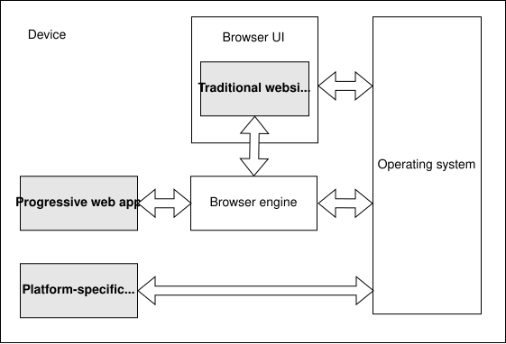

The user interface for installing PWAs differs by device and OS combination.
The main code creates the worker, passing in a URL to the worker's script. The worker and the main code can't directly access each other's state, but can communicate by sending each other messages
(from [MDN2025])
[link,Accessed 2/21/2025.]
a PWA always has a high level architecture split between: The main app, with the HTML, CSS, and the part of the JavaScript that implements the app's UI (by handling user events, for example) The service worker, which handles offline and background tasks(from [MDN2025])
[link,Accessed 2/21/2025.]